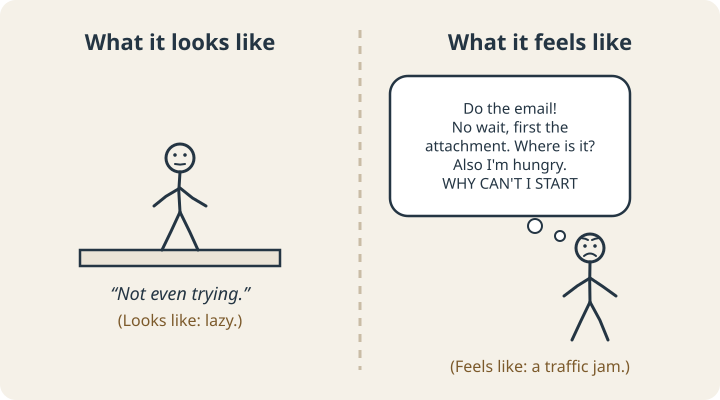
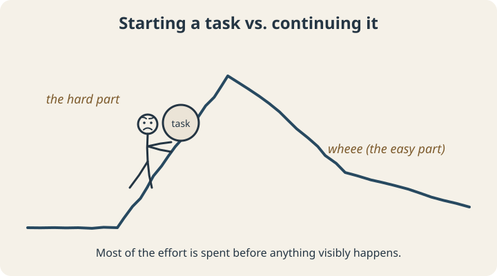

September 22, 2026
ADHD Paralysis: Why You Can’t Start the Thing (Even When You Really Want To)

Here is a thing that happens to a lot of people, and happens a lot to people with ADHD.
There is a task. It is not a hard task. It is, say, replying to one email. You know exactly what the reply should say. You have the time. You even want to do it, because the email has been sitting there glowing at you for four days and every time you see it your stomach does a small unpleasant flip.
And yet you do not reply to the email. You sit there. Maybe you open it, look at it, and close it again. Maybe you reorganize your desktop icons. Maybe you stare at the wall with the specific kind of stare that is not rest and is not work and is somehow more exhausting than both.
The internet has a name for this: ADHD paralysis. It isn't a clinical diagnosis (you won't find it in the DSM), but millions of people search for it because it describes something real and weirdly hard to explain to anyone who hasn't lived it.
First, the part everyone gets wrong
From the outside, ADHD paralysis looks exactly like not caring. Someone sits still, doesn't do the thing, and the obvious conclusion is: they don't want to, or they're lazy.

From the inside, it usually feels like caring a lot while a dozen competing signals jam the intersection: do the email / no, first find the attachment / wait, is this even the right reply / I'm hungry / why am I like this. Nothing gets through. The engine is revving. The car is in neutral.
The difference between those two pictures matters, because the fix for “doesn't care” (more pressure, more guilt, more lectures) makes the second picture worse. Guilt is just one more car in the intersection.
So what’s actually going on?
Nobody has run a study titled “ADHD paralysis,” so this explanation is assembled from pieces that have been studied. Three of them fit especially well.
Piece 1: The motivation system runs on a different fuel
In 2009, a team led by Nora Volkow used brain imaging to compare 53 adults with ADHD who weren’t taking medication against 44 adults without it. They found lower levels of key dopamine markers in the brain’s reward pathway (the wiring that helps turn “this matters” into “I’m doing this now”), and the researchers argued this could help explain the motivation problems so many people with ADHD describe.1
For many ADHD brains, “important” is not the same thing as “activating.” Interesting, urgent, novel, or enjoyable tasks light the fuse. Important-but-boring tasks often don’t, no matter how much you want them done. Which is why the same person who can’t send a two-line email can spend six hyperfocused hours building a spreadsheet of every bird in their neighborhood.
Piece 2: Starting is its own separate skill
Russell Barkley, one of the most cited researchers in ADHD, argues that ADHD is at its core a problem of self-regulation, and specifically of inhibition: the ability to pause, hold a plan in mind, and act on it instead of on whatever’s loudest in the moment.2 Getting started on a task is exactly that: pushing aside everything else in the room and committing to one thing.
Most tasks have what you could call an activation hill:

For a lot of people with ADHD, that first hill feels dramatically steeper than it seems to be for everyone around them. Once you’re over the top, you’re often fine, sometimes better than fine. That’s the maddening part: once you get going, the work itself is usually manageable.
Piece 3: Tasks collect emotional sediment
Every time a task gets avoided, it picks up a little extra weight: a bit of shame, a bit of dread, the memory of the last time you tried and it went badly. ADHD coach Brendan Mahan calls the result the Wall of Awful.

That’s why the four-day-old email is harder to send than a brand-new one. The email hasn’t changed, but the wall in front of it has grown every day it sat there. (If this sounds like procrastination research, it is. We wrote a whole post on why procrastination is really a feelings problem.)
Okay. How do you actually get unstuck?
If paralysis is a steep on-ramp plus a wall of feelings, then the strategies that work do one of two things: make the hill smaller or borrow fuel from somewhere else. Willpower is not on the list, because you’ve tried that and you’re reading this.
Make the hill smaller
- Shrink the first step until it’s almost silly. Not “reply to the email.” “Open the email and type ‘Hi Dana,’.” You are allowed to stop after that. You probably won’t.
- Decide the when and where in advance. “When I sit down with my coffee at 9, I’ll open the email.” These if-then plans are called implementation intentions, and across 94 tests they had a medium-to-large effect on actually following through.4 They work because they move the decision out of the frozen moment.
- Pre-stage the task. Leave the document open, the attachment on the desktop, the running shoes by the door. Every bit of setup you do in advance is hill you don’t have to climb later.
Borrow fuel
- Add urgency on purpose. Set a 10-minute timer and race it. Artificial deadlines are cheesy and they work.
- Add people. Working next to someone, in person or on a video call, is a popular ADHD strategy often called body doubling. The research here is still thin, so treat it as an experiment. Many people find the mere presence of another human makes starting feel less optional.
- Add interest. Pair the boring task with something your brain likes: a specific playlist, a nicer location, a small reward that only happens after the first step.
And lower the wall
Name the feeling out loud: “I’m avoiding this because I’m embarrassed it’s late.” It sounds too simple to matter. But a named feeling is a smaller feeling, and the wall is made of feelings. You don’t have to tear it down. You just need a door.
If you only remember one thing
ADHD paralysis is what happens when a brain with a different motivation system meets a task that is important, boring, and emotionally loaded all at once. The on-ramp can be changed. What helps most people is a smaller first step, a bit of borrowed urgency, and a lot less shame.
If you want to pin down what’s actually blocking you, our free task initiation assessment identifies your biggest start barriers and builds a start plan for a real task on your list.
Scope note: This article is educational. It isn’t a diagnosis, and coaching isn’t a substitute for medical or psychological care. If getting stuck is affecting your work, relationships, or mood in a big way, a clinician who works with ADHD is a good next call.
Sources
- Volkow, N. D., et al. (2009). Evaluating dopamine reward pathway in ADHD: Clinical implications. JAMA, 302(10), 1084–1091. doi.org/10.1001/jama.2009.1308
- Barkley, R. A. (1997). Behavioral inhibition, sustained attention, and executive functions: Constructing a unifying theory of ADHD. Psychological Bulletin, 121(1), 65–94. doi.org/10.1037/0033-2909.121.1.65
- Scheibehenne, B., Greifeneder, R., & Todd, P. M. (2010). Can there ever be too many options? A meta-analytic review of choice overload. Journal of Consumer Research, 37(3), 409–425. doi.org/10.1086/651235
- Gollwitzer, P. M., & Sheeran, P. (2006). Implementation intentions and goal achievement: A meta-analysis of effects and processes. Advances in Experimental Social Psychology, 38, 69–119. doi.org/10.1016/S0065-2601(06)38002-1